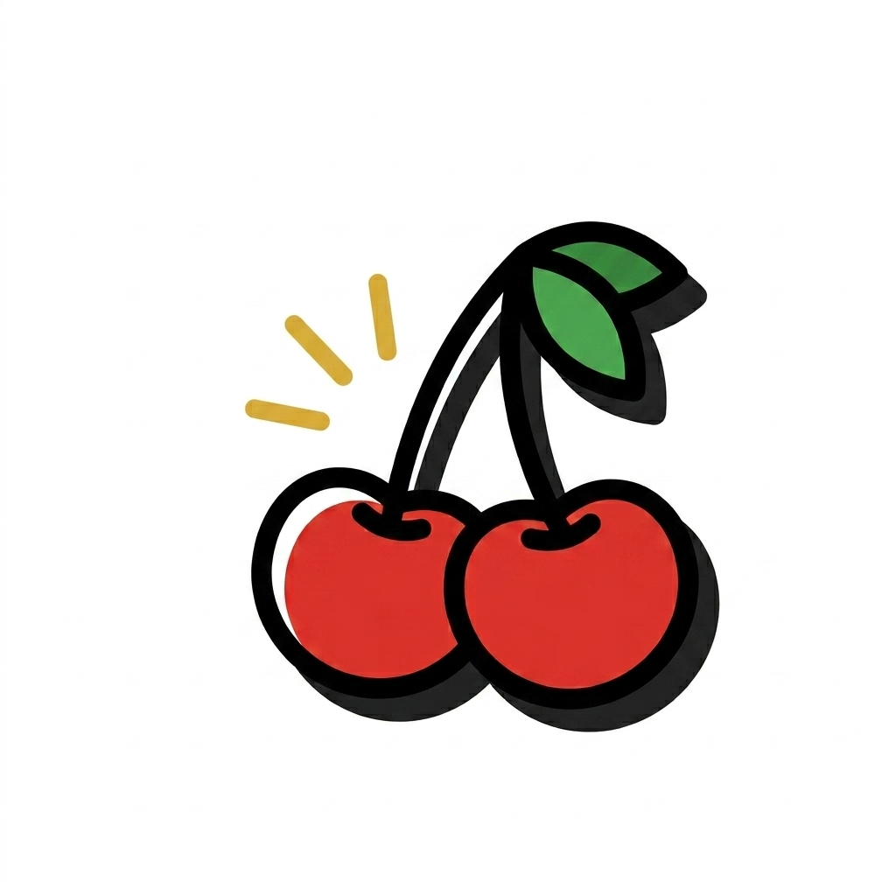
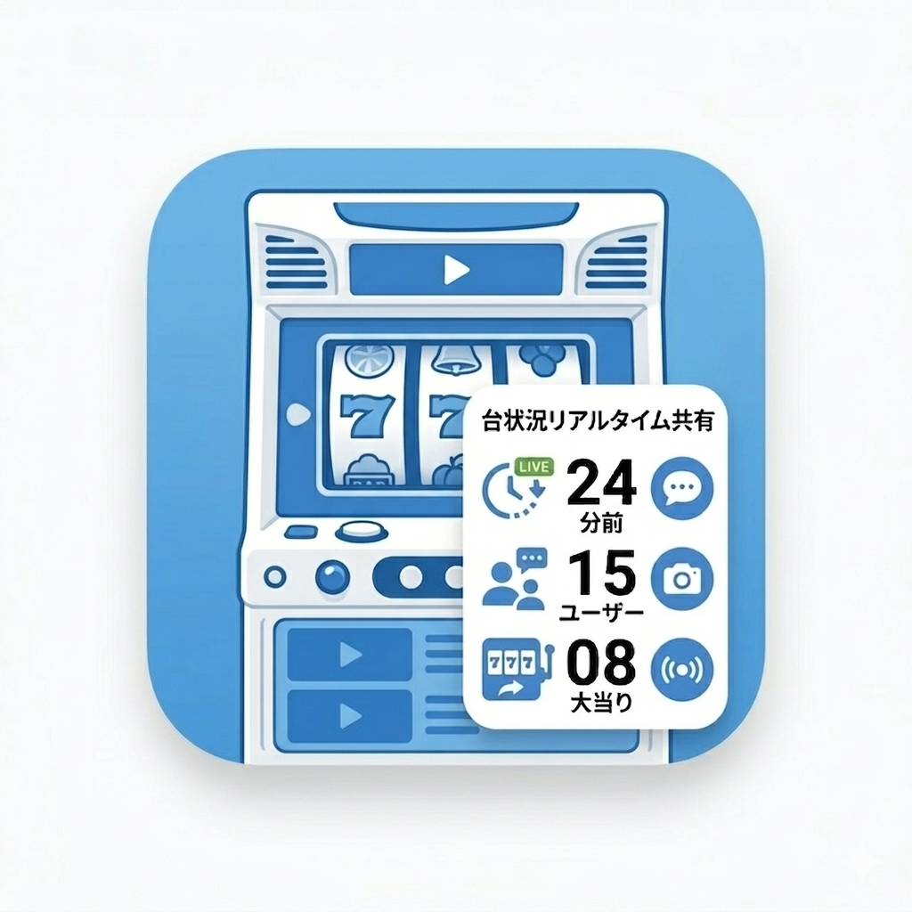
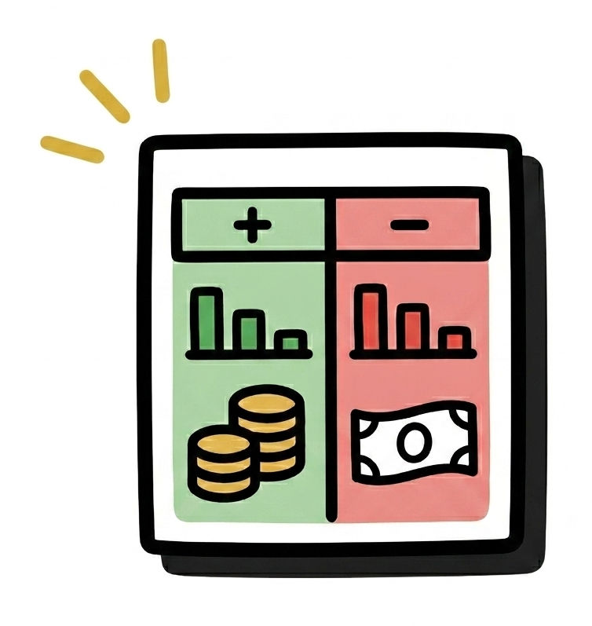

ログイン
🛠️ 無料で使えるツール一覧
📱 iOSアプリ（無料）

App Storeスロ塾のながらカウンター
App Storeスロシェア（台情報共有）
App Storeスロunit簿（収支管理）
💻 Webツール（ブラウザで使える）
ログインパスワードが必要です。Discord閲覧パスワードと同じです。毎月1日にパスワードが更新されます。
パスワードはたかどらのスロ塾メンバーシップより取得可能です。
詳細はこちらをご覧ください。
たかどらのスロ塾 メンバーシップ
たかどらのスロ塾 利用・入会方法
たかどらのスロ塾は、ホームページとDiscordでスロットの狙い目情報をリアルタイムに共有するサービスです。Discordの入室方法や、ホームページの閲覧方法から入会手続きまで全体の流れを説明いたします。
入会方法
1. noteのメンバーシップに参加
たかどらのスロ塾の会員になるには、noteにて「たかどらのスロ塾メンバーシップ」に参加（月額¥1,999）が必要です。メンバーシップを開始いただくと、毎月Discord入室パスワードとホームページログインパスワードを発行します。
2. Discord入室パスワードの取得とログイン
毎月発行されるDiscordの入室パスワードを受け取っていただき、指定のDiscordログインページにアクセスし、パスワードを入力してください。これにより、狙い目情報の閲覧や質問チャットの利用が可能になります。
3. ホームページの閲覧パスワードについて
なお、ホームページの閲覧パスワードは、Discordの閲覧パスワードと同一となっておりますので、同じパスワードを用いてどちらの情報にもアクセスいただけます。
• マガジン単発購入はこちら ←単発購入も可能です。
Discord閲覧方法
有料部分にあるDiscordへの招待URLから Discordサーバーへアクセスしてください。
その後#ログインはこちらから のチャンネルをタップし入室します。

入室したら🚪のボタンをタップ

そうするとこのような画面になりパスワード入力を求められます。ここで毎月発行されるパスワードを入力することでDiscordチャンス内を閲覧するメンバーロールが自動付与され全チャンネルが閲覧可能になります。

ホームページ閲覧方法
ホームページへアクセス
Simple Login Page |suroschool.jp

所定箇所にパスワードを入力、ログインしてください。パスワードは毎月１日更新されます。
パスワード入力が成功しログインするとこのような画面になります。

Discordの利用方法
たかどらのかどらのスロ塾では、Discordを利用して各機種に関する疑問を即座にコーチが解消します。たかどらのスロ塾ホームページに掲載されている各機種ページ上部の［Discord質問する」ボタンをクリックするか、Discordの対応チャンネルに直接アクセスしていただくと、すぐにご質問が可能です。現役専業スタッフが迅速に回答いたしますので、疑問点や不明点があればお気軽にご利用ください。
［Discordの各機種チャンネル画面]

ホームページの利用方法
1. 狙い目情報の確認
まずはホームページにアクセスして、各機種の狙い目情報をご確認いただけます。トップページには最新の情報が掲載されておりますので、日々のチェックに便利です。
[ホームページサンプル]


2. 各機種の専用ページへアクセス
各機種ごとに専用のページが用意されております。こちらで、より詳細な情報や各機種の特徴を確認することができます。
3. Discordでの質問対応
もしご不明な点や疑問がございましたら、各機種ページ上部にある［【Discord】質問する」をタップしてください。Discordにリンクされ、リアルタイムでご質問に対する回答をお受けいただけます。

4. 各機種に対応したツール
たかどらのスロ塾では、各機種に対応したツールを一覧でご用意しております。初めてご利用される方のために、サンプルツールもご用意しております。サンプルツールをお試しいただくことで、ツールの使い方や効果を実感してみてください。
ツールはこれからも追加していきます。
以上の手順に従っていただくことで、たかどらのスロ塾の最新スロット情報やDiscordでのリアルタイム質問対応をスムーズにご利用いただけます。皆様のご参加を心よりお待ちしております。